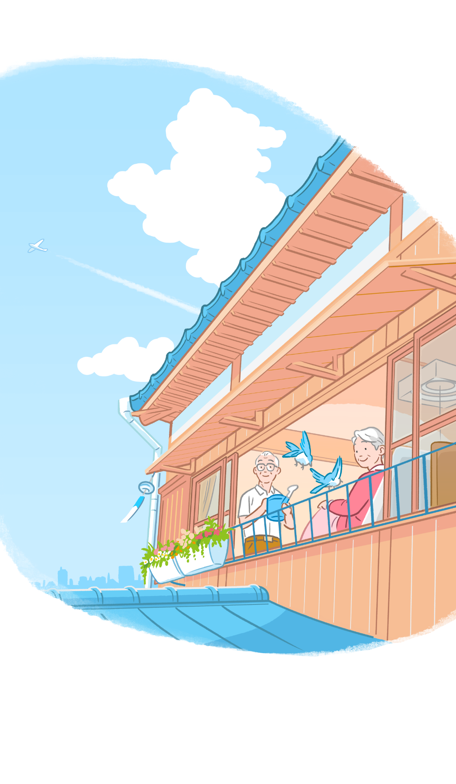
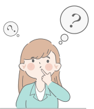
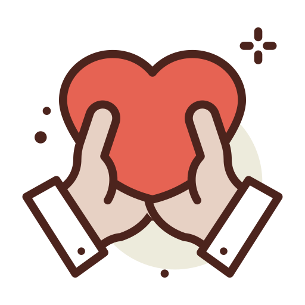

残された時間を大切に過ごす
～ したい 食べたい 行きたい 会いたい を叶える ～
Respect for the person's wishes

山本 郁子
社会福祉士でケアマネージャーの資格を有し、介護施設での身体介護や相談援助業務、管理者経験を経て、現在は所属する事業所の広報専属として従事。ターミナルケアにまつわる記事や介護に関する記事の執筆経験も豊富なフルタイムで働く3人の母でもあるワーママ。
残された時間で出来ることって？
~ 出来るだけやり残しを無くすために ~
余命宣告を受けたとき、残された時間を後悔の残らないように過ごすために、何かできることはあるでしょうか。
そのひとつに、本人のしたいことを叶える、ということがあります。
日ごとに本人の体力や気力が落ちていくと、家族の力だけで実現することが難しいと感じてしまうこともあるかもしれません。
でもじつは、民間のサービスを活用すれば叶えられることもたくさんあります。
残された時間の中で、本人のしたいことを叶えるための取り組みは、本人が生きてくれているからこそ出来ることです。
本人が望んだものに取り組んだことは、別れの時が来た時に、きっとその悲しみを癒し、心に残る大切な思い出にもなるでしょう。
- 目次 -
Find out what he/she wants to do.
「食べたい」を叶える
・ビールが飲みたい男性の話
・看取りにとっての「食べる」とは
「行きたい」を叶える
・ うちのお風呂に入りたい
・行きたいところに行く喜び
「会いたい」を叶える
・大切な人にきちんとお礼を伝えたい
When what you want to do comes true, you'll have no regrets.
We hope...

したいことを探してみる
Find out what you want to do

いざ、本人のしたいことを叶える、とは言っても具体的な希望がわかりにくい場合もあるかもしれません。
そんなときは、思い出話をしたり、昔のアルバムをめくってみたりと、これまでの人生で触れてきたことに思いをめぐらせてみると良いかと思います。
そうすると、本人の趣味のことだったり、好きな食べ物だったり、お世話になった友人のことだったり、色々と思い浮かんでくるのではないでしょうか。
そして、そんな中から、本人が「生きているうちにしておきたい」と思うことがあれば、どんな小さな事でもよいので、それを叶えるサポートをご家族にはしてあげて欲しいなと思います。
比較的簡単に叶えやすいこともあれば、中には、それって本当にできるの？と不安になることもあるでしょう。
そんな時はまず、主治医や周りのサポートをしてくれる人たちに相談して下さい。
基本的に医療では、治療を行う場合は、好きなことやしたいことに制限をかけてでも治療を最優先してもらうことが多いのですが、看取りの時期においては、したいことを実現するために医療がサポートをする、という考え方に変わってきます。
本人に悔いなく過ごしてほしいという思いは、医療者や介護者も同じです。
本人や家族の思いに寄り添い、どうすれば希望が叶うのか、具体的な方法を一緒に考えてくれるはずです。
「食べたい」を叶える
Fulfill your "I want to eat" desire.

本人が最期に食べたいものがあったとき、きっとご家族も食べてもらいたいと考えると思います。
しかし、余命宣告を受け、噛む力や飲み込む力が落ちてきていると、食べるという事がそもそも出来ないかもしれないという状況も考えられます。
「この一口をたべることで、むせたりなどして、しんどくなったり熱が出たり、本人がますます苦痛を感じてしまうのではないか......」
そう心配をして、ためらってしまうかもしれません。
ただ、この時期は本人の希望も大切に捉え、食べることを前向きに検討しても良いのではないでしょうか。
人は飲んだり食べたりするとき、「ごっくん」と飲み込みます。
さらさらの液体では、のどを通過するスピードが速いのでむせやすくなります。
対策として、少しとろみをつけた液体にすると、「ゆっくりごっくんがしやすくなる」ので、むせにくくなります。
固形の食べ物であれば、本人の食べる力に合わせて小さくしたり、すりつぶしてみたりして、味わいやすい形を探してみましょう。
私が経験したエピソード
ビールが飲みたい男性の話
その方はお酒の好きな男性で、元気な時は毎日晩酌を楽しんでいました。
しかし余命宣告をされた頃は、もう既に、ご飯を食べることも、水分を口から摂ることも出来ないような状態になっていました。
それにもかかわらず、この男性は「ビールが飲みたい」とおっしゃったのです。
私たちが心配したことは、むせることで肺炎になってしまわないか、ということでしたが、主治医やご家族と相談し、大好きだったビールを飲ませてあげよう、という事になりました。
最初はむせると本人が辛くなるかもしれないので、ビールにとろみ製剤でとろみをつけ、吸い飲みを使って口に含んでもらいました。
久々のビールの味に、ゆっくり喉を「ごくっ」と膨らませて、飲み込まれました。
その後すぐに喉からゴロゴロと音がして、誤嚥されているなぁという事がわかって、やっぱり飲むのは難しいのかと私たちは心配になりました。
そんな心配をよそに、男性は困ったような表情をして、かすれた声でこう言いました。
「ビールは、喉越しが大事やからなぁ...」
そこで、次の一口はとろみをつけない状態で、味わってもらうことに。
またもや大きく喉を
「ごくっ」
と鳴らしてビールを飲まれ、何とも言えない表情をされ、ひとこと、
「美味い......」
そう味わっておられたのを、今でも鮮明に覚えています。
たった一口ビールを飲んだあと、やっぱり喉からはゴロゴロと音が聞こえていました。
そして、これがその男性が最期に口にしたものになりました。
看取りにとっての「食べる」とは
もしかしたら、この一口がきっかけで、何かが起こり得るかもしれません。
それでも本人が食べたいのなら...
看取りの時においては、食事はエネルギーを摂ることを目的とする必要はなく「食べること」は、「楽しむこと」であり「心を満たすこと」が目的で良いのだと思います。
たとえ飲み込むことはできなくても、好きな食べ物を口にいれて、味や香り、あたたかさや冷たさ、硬さや柔らかさを感じることで、好きだったものに触れることとして、楽しみながら食べることを叶えて頂けたら良いなと思うのです。
Fulfillment of "I want to go there.

本人にどうしても行きたい場所があったとき、こんな状態で連れていけるだろうかと家族は心配になると思います。
けれども、本人の行きたい思いを叶えるための方法や手段はたくさんありますので、ぜひ前向きに考えてみませんか。
ポイントは、「いかに本人にとって安楽な移動が出来るか」ということです。
病状の進行によって歩くことが難しくなっていても、車いすや福祉タクシーなどを使うことで、本人の負担を軽くしながら行きたいところに移動することが出来ます。
もし、車いすに座ることも辛い場合には、リクライニングタイプの車いすを使うことをお勧めします。
リクライニングタイプの車いすは、通常の車いすよりも背もたれが大きく、また背中を倒して楽な姿勢での移動を叶えてくれます。
そして車いすや、リクライニング車いすのまま乗車できる車両が、福祉タクシーにはあります。
中にはストレッチャーを使って、横になった状態のまま乗車できるタイプの車両もありますので、本人の状態に合わせて検討してみてください。
リクライニング車いすに福祉タクシー...元気な時には使うことのなかったこれらをどうやって手配すれば良いのかが判らず不安になると思いますが、大丈夫です。
介護のケアマネジャーや病院のソーシャルワーカーなど、ぜひ身近な専門職の誰かに相談してみてください。
もちろん担当の主治医でも構いません。
きっと、手配についての助言や支援をしてくれるはずです。
もし、行きたい場所に行くために、家族のサポートだけでは不安がある場合はサポートスタッフをお願いするという方法もあります。
介護保険の訪問介護事業所でも自費サービスとして有償で請け負ってくれる事業所もありますし、民間サービスの中には介護旅行という分野を専門的に展開している企業もあったりします。
そういった社会資源を上手に活用することで、「行きたい」は叶えてあげられるものになります。
私が経験したエピソード
うちのお風呂に入りたい
私が支援していた女性は、自宅で銭湯を営んでいた方でした。
1階が銭湯になっている店舗兼住宅だったこともあり、住居空間では細くて急な階段を上り下りすることが必要で、自宅での介護が困難になってからは介護施設で過ごされていました。
しかし余命宣告を受け、最期に、ぜひ自分の家で過ごしたい。
自宅の銭湯のお風呂に浸かりたいという希望があったのです。
その頃には食べることが充分にできない状態で点滴が手放せず、肺に水が溜まって呼吸が苦しいので、在宅酸素療法で酸素のチューブもつけていました。
しかし本人の希望を叶えるため、主治医や訪問看護師、介護ヘルパーが連携して自宅に帰ることにしました。施設から家までの移動は、福祉タクシーを手配し、横になった状態で移動しました。
自宅に着くと、訪問看護師さんも来てくれ、お風呂に入るためにみんなで準備にとりかかりました。
介護ヘルパーさんにもお願いして来てもらい、お風呂の介助などを手伝ってもらいました。
そうして、慣れ親しんだ銭湯の湯舟に家族と一緒に入ってもらうことが出来、少しの時間でしたが、ご本人が希望された「自宅で過ごしてもらうこと」が叶ったのです。
女性も自宅に戻れたことを何より喜んでおられた様子でした。
その数日後、介護施設のお部屋で家族に見守られながら息を引き取りました。
本人のエンゼルケアを済ませて、施設から斎場へと出発するとき、ご家族の方が「最期まで本人のために過ごすことができて、私たちはなんの心残りもありません」と、満面の笑みでそう声をかけて下さいました。
行きたいところに行く喜び
終末期はどうしても点滴をしていたり、酸素を入れていたりと、移動に不安があることも多いかと思います。
しかし、そんな時こそ、ぜひ専門家に相談したり、色んなサービスを活用してその不安を解消し、行きたいところに行ける喜びを感じて頂きたいです。
最期に自宅銭湯での入浴が叶った女性の家族が、なんの心残りもないと言えたのは、本人の希望することを叶えられた経験を通し、最期の時間にしっかりと寄り添えたからなのだと思います。
Fulfillment of "I want to see you".

余命宣告を受け、自分には時間があまりないと思ったとき、大切な友人や親族のことが思い浮かんだら、ぜひ会っておきたいですよね。
会いたい人に会うことを叶えるためには、まずはそのお相手に連絡をして、今の状況を伝えることになると思います。
しかし、どうしても元気な時ではないため、お相手に心配をかけてしまうのでは、と悩まれることもあるでしょう。
もちろんお相手も、「こんな大変な時に会いに行っても大丈夫だろうか。」「辛そうな姿を見られることに、戸惑いがあるのではないか？」という心配をしてしまうかもしれません。
そんな時は、「自分の人生を楽しいものにしてくれた」「お世話になった」「自分にとって大切な人なのでお礼を言いたい」と、お伝えすると良いと思います。
大切な人にきちんとお礼を伝えたい
そんな気持ちを知っておいてもらうことで、お相手の方も、会いたいと言われたときに嬉しく思いますし、安心して会いに行けたりすると思います。
そのひと時は、会ってしんみりするのではなく、ぜひ楽しく、笑って過ごして下さい。
きちんとお礼が言えると心残りがなくなり、最期の時間も穏やかな気持ちで過ごすことができるでしょう。
When what you want to do comes true, you'll have no regrets.

残された限りある時間を、いかに本人がやりたいと思うことを叶えていくのか。
そのことに思いをめぐらせ、できることから一緒に行動することが、本人の人生の最期に寄り添うことなのだと思います。
そんな時間を少しでも多く持つことが出来れば、それは、ご家族にとっても、大切な方との別れの悲しみを受け止め、心を軽くしてくれるかけがえのないものにもなるはずです。
ただ、もちろんこれは、無理にするべきことではありません。
本人の身体や心の状態ともよく相談しながら、無理のない範囲で、やれることで良いのです。
大切なことは、本人の人生に寄り添うこと。
その方法のひとつが、したいことを一緒に叶えることなのだと思います。
本人にとっても、ご家族にとっても、できる限り悔いの残らないような時間を過ごして頂きたいと心から願ってやみません。